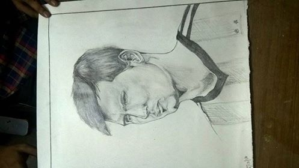
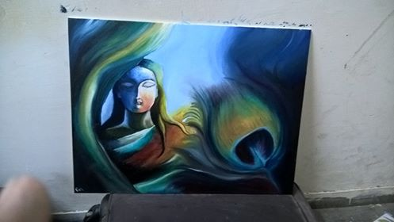

I genuinely did not know a single hint about what CSE is actually before I came to IITK. Now, that I am here somehow I have started loving the subject and ith love for physics I am looking to do something in Quantum Computing , May god help all of us in our aspiration .
I am genuinely interested in these two branches of science and here I share a source of many wonderful science talks many more disciplines: World Science Festival!
This is something which is a great gift from my school Ramakrishna Mission Vidyalaya, Narendrapur to me. I love to paint and here are some of my paintings .
 I am a Bengalee and I am in love with RabindraSangit and Bengali Literature. I can also play hermonium , which again is a gift to me from my school! I also like JRR Tolkein style english literature.
I wish I could be a professional footballer :-) I enjoy playing football and if you want to know I love to play CAM or LM . My favourite player is Lionel Messi and I love FC Barcelona! Visca El Barca !